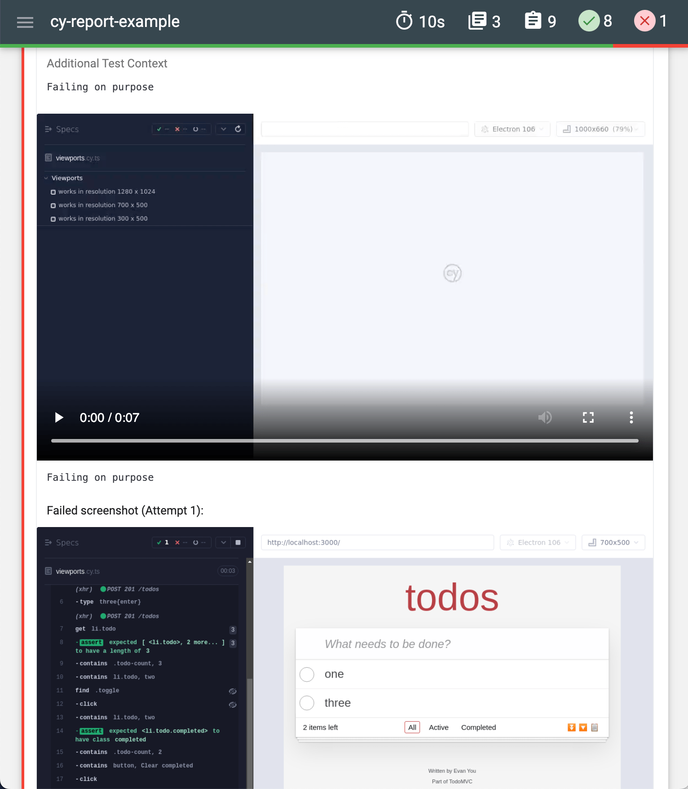

A few days ago I looked into Cypress Mochawesome plugin. While I could get a full HTML report from a test run, the report itself lacked screenshots and videos - two test artifacts I find invaluable when debugging a failed Cypress continuous integration test run. In this blog post, I will show how to generate better Mochawesome reports, including videos and screenshots. Here is how a typical report will look when we are finished:

Let's see how we can generate these static reports using off the shelf reporters. We are not going to use any 3rd party services; we will only run our tests using the standard CI providers, like GitHub Actions.
üéÅ You can find the source code for this blog post in the branches of repo bahmutov/cy-report-example.
Mochawesome reporter
First, let's use the "standard" Mochawesome reporter adamgruber/mochawesome, which is really three separate tools:
- Mochawesome reporter (can be used with Cypress)
- Reporter merger (from many JSON file it creates a single JSON report)
- Reporter generator (from JSON file it generates HTML report)
In this blog post, I am using the following versions of these NPM packages:
1 | mochawesome@7.1.3 |
You can find my source code in the branch mochawesome-reporter of the repo bahmutov/cy-report-example.
Here is the configuration:
1 | import { defineConfig } from 'cypress' |
The plugin also requires extra code in the support file to attach the screenshots and videos to the spec reports
1 | import addContext from 'mochawesome/addContext' |
Each test run produces both JSON and HTML reports for each spec file. If all JSON reports are on the same filesystem, we could merge it using the marge tool, and then generate a single HTML report. I have put these commands into my NPM scripts
1 | { |
For now, we see the separate test artifacts for each CI container.
If we download the test artifacts Zip archive, like cypress-results.zip, we will find the screenshots, the videos, and the Mochawesome HTML reports for each spec file.
1 | cypress-results/ |
Individual HTML reports don't have the spec filename, but the do have the videos and the screenshots. Here is a zoomed out view of the HTML report.
Ok, this is nice, is there anything a little bit easier to configure that shows the combined report and includes the spec filenames? This is very important if we want to run the tests in parallel for free.
Cypress Mochawesome reporter
Next, let's see if LironEr/cypress-mochawesome-reporter can do a better job generating full reports. You can find this source code in the branch cypress-mochawesome-reporter of the repo bahmutov/cy-report-example.
I am using the cypress-mochawesome-reporter@3.2.3 for this blog post. Let's configure the reporter in the Cypress config file:
1 | import { defineConfig } from 'cypress' |
1 | import 'cypress-mochawesome-reporter/register' |
Note: the video embedding in the HTML report did not work until I turned the test retries on using retries: 1 configuration. Without test retries, the video was simple not included in the report, only the screenshots were present.
The GitHub Actions workflow file uses my cypress-workflows to run all tests using one machine (the standard workflow) or split them across 3 machines (the split workflow). In all cases, the cypress/screenshots, cypress/videos, and cypress/results folders are stored as test artifacts by default:
The report itself is beautiful, has the spec filename, the screenshots (for each attempt), and the video, all using the relative file paths.
Unfortunately, there is no easy way of combining the split reports from the separate CI machines. If a test fails, and you use the split workflow, you must find the machine that has the failed spec, and download its artifacts.
The reporters compared
| Feature | mochawesome | cypress-mochawesome |
|---|---|---|
| Configuration effort | 40 lines | 20 lines |
| JSON and HTML reports | ✅ | üö´ |
| Combined report | ✅ | üö´ |
| Spec filenames | üö´ | ✅ |
| Videos without test retries | ✅ | üö´ |
| Includes hooks in the report | üö´ | üö´ |
My conclusion: both reporters can do the job, but both require configuration and experimentation. The cypress-mochawesome-reporter seems close BUT it does not produce a combined report (and deletes the intermediate JSON reports, sigh), which is bad. Maybe I need to make my own awesome reporter...
The winner: Mochawesome with the split workflow
After looking at the above comparison, I have decided that the best solution is to use the mochawesome-reporter with the cypress-workflows/split reusable workflow when running specs using GitHub Actions. The initial configuration is a chore, but once you set it up you get a fast CI run with the merged test report. Here is my workflow file:
1 | name: ci |
This workflow runs the tests in parallel for free, each CI machine saves its own Mochawesome reports. Then the reports are combined into a single report, which is saved as an artifact.
The merged Zip archive has the separate reports per spec file and one merged report.
The merged report includes information about each test (even if it does not show the spec filename üò¢)
Each spec has its video included and each failed test has the screenshot images with the failure.
If you ask me, this is pretty strong contender for the champion of Mochawesome reporting battle.